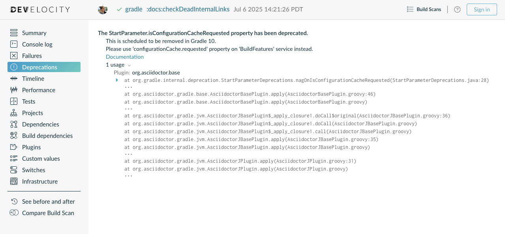

Upgrading from Gradle 4.x to 5.0
- For all users
- Upgrading from 4.10 and earlier
- Upgrading from 4.9 and earlier
- Upgrading from 4.8 and earlier
- Upgrading from 4.7 and earlier
- Upgrading from 4.6 and earlier
- Upgrading from 4.5 and earlier
- Upgrading from 4.4 and earlier
- Upgrading from 4.3 and earlier
- Upgrading from 4.2 and earlier
- Upgrading from 4.1 and earlier
- Upgrading from 4.0
- Changes in detail
- [5.0] Default memory settings changed
- [5.0] New default versions for code quality plugins
- [5.0] Library upgrades
- [5.0] Improved support for dependency and version constraints
- [5.0] BOM import
- [5.0] Separation of compile and runtime dependencies when consuming POMs
- [5.0] Changes to property factory methods on
DefaultTask - [5.0] Gradle now bundles JAXB for Java 9 and above
- [5.0] The
gradlePluginPortal()repository no longer looks for JARs without a POM by default - Java Library Distribution Plugin utilizes Java Library Plugin
- Configuration Avoidance API disallows common configuration errors
- [5.0] Worker API: working directory of a worker can no longer be set
- [4.10] Publishing to AWS S3 requires new permissions
- [4.9] Consider trying the lazy API for task creation and configuration
- [4.8] Switch to the Maven Publish and Ivy Publish Plugins
- [4.8] Use deferred configuration for publishing plugins
- [4.8] Configure existing
wrapperandinittasks - [4.8] Gradle now honors implicit wildcards in Maven POM exclusions
- [4.7] Changes to the structure of Gradle’s plain console output
- [4.6] Changes to the APIs of native tasks related to compilation, linking and installation
- [4.6] Visual Studio integration only supports a single solution file for all components of a build
- [4.5]
HttpBuildCacheno longer follows redirects - [4.4] Third-party dependency upgrades
This chapter provides the information you need to migrate your older Gradle 4.x builds to Gradle 5.0. In most cases, you will need to apply the changes from all versions that come after the one you’re upgrading from. For example, if you’re upgrading from Gradle 4.3 to 5.0, you will also need to apply the changes since 4.4, 4.5, etc up to 5.0.
| If you are using Gradle for Android, you need to move to version 3.3 or higher of both the Android Gradle Plugin and Android Studio. |
For all users
-
If you are not already on the latest 4.10.x release, read the sections below for help upgrading your project to the latest 4.10.x release. We recommend upgrading to the latest 4.10.x release to get the most useful warnings and deprecations information before moving to 5.0. Avoid upgrading Gradle and migrating to Kotlin DSL at the same time in order to ease troubleshooting in case of potential issues.
-
Try running
gradle help --scanand view the deprecations view of the generated Build Scan. If there are no warnings, the Deprecations tab will not appear.
This is so that you can see any deprecation warnings that apply to your build. Gradle 5.x will generate (potentially less obvious) errors if you try to upgrade directly to it.
Alternatively, you can run
gradle help --warning-mode=allto see the deprecations in the console, though it may not report as much detailed information. -
Update your plugins.
Some plugins will break with this new version of Gradle, for example because they use internal APIs that have been removed or changed. The previous step will help you identify potential problems by issuing deprecation warnings when a plugin does try to use a deprecated part of the API.
In particular, you will need to use at least a 2.x version of the Shadow Plugin.
-
Run
gradle :wrapper --gradle-version 5.0to update the project to 5.0 -
Move to Java 8 or higher if you haven’t already. Whereas Gradle 4.x requires Java 7, Gradle 5 requires Java 8 to run.
-
Read the Upgrading from 4.10 section and make any necessary changes.
-
Try to run the project and debug any errors using the Troubleshooting Guide.
In addition, Gradle has added several significant new and improved features that you should consider using in your builds:
-
Maven Publish and Ivy Publish Plugins that now support digital signatures with the Signing Plugin.
-
Use native BOM import in your builds.
-
The Worker API for enabling units of work to run in parallel.
-
A new API for creating and configuring tasks lazily that can significantly improve your build’s configuration time.
Other notable changes to be aware of that may break your build include:
-
Separation of compile and runtime dependencies when consuming POMs
-
A change that means you should configure existing
wrapperandinittasks rather than defining your own. -
The honoring of implicit wildcards in Maven POM exclusions, which may result in dependencies being excluded that weren’t before.
-
A change to the way you add Java annotation processors to a project.
-
The default memory settings for the command-line client, the Gradle daemon, and all workers including compilers and test executors, have been greatly reduced.
-
The default versions of several code quality plugins have been updated.
-
Several library versions used by Gradle have been upgraded.
Upgrading from 4.10 and earlier
If you are not already on version 4.10, skip down to the section that applies to your current Gradle version and work your way up until you reach here. Then, apply these changes when moving from Gradle 4.10 to 5.0.
Other changes
-
The
enableFeaturePreview('IMPROVED_POM_SUPPORT')andenableFeaturePreview('STABLE_PUBLISHING')flags are no longer necessary. These features are now enabled by default. -
Gradle now bundles JAXB for Java 9 and above. You can remove the
--add-modules java.xml.bindoption fromorg.gradle.jvmargs, if set.
Potential breaking changes
The changes in this section have the potential to break your build, but the vast majority have been deprecated for quite some time and few builds will be affected by a large number of them. We strongly recommend upgrading to Gradle 4.10 first to get a report on what deprecations affect your build.
The following breaking changes are not from deprecations, but the result of changes in behavior:
-
Separation of compile and runtime dependencies when consuming POMs
-
The evaluation of the
publishing {}block is no longer deferred until needed but behaves like any other block. Please useafterEvaluate {}if you need to defer evaluation. -
The
JavadocandGroovydoctasks now delete the destination dir for the documentation before executing. This has been added to remove stale output files from the last task execution. -
The Java Library Distribution Plugin is now based on the Java Library Plugin instead of the Java Plugin.
While it applies the Java Plugin, it behaves slightly different (e.g. it adds the
apiconfiguration). Thus, make sure to check whether your build behaves as expected after upgrading. -
The
htmlproperty onCheckstyleReportandFindBugsReportnow returns aCustomizableHtmlReportinstance that is easier to configure from statically typed languages like Java and Kotlin. -
The Configuration Avoidance API has been updated to prevent the creation and configuration of tasks that are never used.
-
The default memory settings for the command-line client, the Gradle daemon, and all workers including compilers and test executors, have been greatly reduced.
-
The default versions of several code quality plugins have been updated.
-
Several library versions used by Gradle have been upgraded.
The following breaking changes will appear as deprecation warnings with Gradle 4.10:
- General
-
-
<<for task definitions no longer works. In other words, you can not use the syntaxtask myTask << { … }.Use the Task.doLast() method instead, like this:
task myTask { doLast { ... } } -
You can no longer use any of the following characters in domain object names, such as project and task names: <space>
/ \ : < > " ? * |. You should also not use.as a leading or trailing character.
-
- Running Gradle & build environment
-
-
As mentioned before, Gradle can no longer be run on Java 7. However, you can still use forked compilation and testing to build and test software for Java 6 and above.
-
The
-Dtest.singlecommand-line option has been removed — use test filtering instead. -
The
-Dtest.debugcommand-line option has been removed — use the--debug-jvmoption instead. -
The
-u/--no-search-upwardcommand-line option has been removed — make sure all your builds have a settings.gradle file. -
The
--recompile-scriptscommand-line option has been removed. -
You can no longer have a Gradle build nested in a subdirectory of another Gradle build unless the nested build has a settings.gradle file.
-
The
DirectoryBuildCache.setTargetSizeInMB(long)method has been removed — use DirectoryBuildCache.removeUnusedEntriesAfterDays instead. -
The
org.gradle.readLoggingConfigFilesystem property no longer does anything — update affected tests to work with yourjava.util.loggingsettings.
-
- Working with files
-
-
You can no longer cast
FileCollectionobjects to other types using theaskeyword or theasType()method. -
You can no longer pass
nullas the configuration action of CopySpec.from(Object, Action). -
For better compatibility with the Kotlin DSL, CopySpec.duplicatesStrategy is no longer nullable. The property setter no longer accepts
nullas a way to reset the property back to its default value. UseDuplicatesStrategy.INHERITinstead. -
The
FileCollection.stopExecutionIfEmpty()method has been removed — use the @SkipWhenEmpty annotation onFileCollectiontask properties instead. -
The
FileCollection.add()method has been removed — use Project.files() and Project.fileTree() to create configurable file collections/file trees and add to them via ConfigurableFileCollection.from(). -
SimpleFileCollectionhas been removed — use Project.files(Object…) instead. -
Don’t have your own classes extend
AbstractFileCollection— use the Project.files() method instead. This problem may exhibit as a missinggetBuildDependencies()method.
-
- Java builds
-
-
The
CompileOptions.bootClasspathproperty has been removed — use CompileOptions.bootstrapClasspath instead. -
You can no longer use
-source-pathas a generic compiler argument — use CompileOptions.sourcepath instead. -
You can no longer use
-processorpathas a generic compiler argument — use CompileOptions.annotationProcessorPath instead. -
Gradle will no longer automatically apply annotation processors that are on the compile classpath — use CompileOptions.annotationProcessorPath instead.
-
The
testClassesDirproperty has been removed from the Test task — use testClassesDirs instead. -
The
classesDirproperty has been removed from both the JDepend task and SourceSetOutput. Use the JDepend.classesDirs and SourceSetOutput.classesDirs properties instead. -
The
JavaLibrary(PublishArtifact, DependencySet)constructor has been removed — this was used by the Shadow Plugin, so make sure you upgrade to at least version 2.x of that plugin. -
The
JavaBasePlugin.configureForSourceSet()method has been removed. -
You can no longer create your own instances of
JavaPluginConvention,ApplicationPluginConvention,WarPluginConvention,EarPluginConvention,BasePluginConvention, andProjectReportsPluginConvention. -
The
MavenPlugin used to publish the highly outdated Maven 2 metadata format. This has been changed and it will now publish Maven 3 metadata, just like theMaven PublishPlugin.With the removal of Maven 2 support, the methods that configure unique snapshot behavior have also been removed. Maven 3 only supports unique snapshots, so we decided to remove them.
-
- Tasks & properties
-
-
The following legacy classes and methods related to lazy properties have been removed — use ObjectFactory.property() to create
Propertyinstances:-
PropertyState -
DirectoryVar -
RegularFileVar -
ProjectLayout.newDirectoryVar() -
ProjectLayout.newFileVar() -
Project.property(Class) -
Script.property(Class) -
ProviderFactory.property(Class)
-
-
Tasks configured and registered with the task configuration avoidance APIs have more restrictions on the other methods that can be called from a configuration action.
-
The internal
@Optionand@OptionValuesannotations — packageorg.gradle.api.internal.tasks.options— have been removed. Use the public @Option and @OptionValues annotations instead. -
The
Task.deleteAllActions()method has been removed with no replacement. -
The
Task.dependsOnTaskDidWork()method has been removed — use declared inputs and outputs instead. -
The following properties and methods of
TaskInternalhave been removed — use task dependencies, task rules, reusable utility methods, or the Worker API in place of executing a task directly.-
execute() -
executer -
getValidators() -
addValidator()
-
-
The TaskInputs.file(Object) method can no longer be called with an argument that resolves to anything other than a single regular file.
-
The TaskInputs.dir(Object) method can no longer be called with an argument that resolves to anything other than a single directory.
-
You can no longer register invalid inputs and outputs via TaskInputs and TaskOutputs.
-
The
TaskDestroyables.file()andTaskDestroyables.files()methods have been removed — use TaskDestroyables.register() instead. -
SimpleWorkResulthas been removed — use WorkResult.didWork. -
Overriding built-in tasks deprecated in 4.8 now produces an error.
Attempting to replace a built-in task will produce an error similar to the following:
> Cannot add task 'wrapper' as a task with that name already exists.
-
- Scala & Play
-
-
Play 2.2 is no longer supported — please upgrade the version of Play you are using.
-
The
ScalaDocOptions.styleSheetproperty has been removed — the Scaladoc Ant task in Scala 2.11.8 and later no longer supports this property.
-
- Kotlin DSL
-
-
Artifact configuration accessors now have the type
NamedDomainObjectProvider<Configuration>instead ofConfiguration -
PluginAware.apply<T>(to)was renamedPluginAware.applyTo<T>(target).
Both changes could cause script compilation errors. See the Gradle Kotlin DSL release notes for more information and how to fix builds broken by the changes described above.
-
- Miscellaneous
-
-
The
ConfigurableReport.setDestination(Object)method has been removed — use ConfigurableReport.setDestination(File) instead. -
The
Signature.setFile(File)method has been removed — Gradle does not support changing the output file for the generated signature. -
The read-only
Signature.toSignArtifactproperty has been removed — it should never have been part of the public API. -
The
@DeferredConfigurableannotation has been removed. -
The method
isDeferredConfigurable()was removed fromExtensionSchema. -
IdeaPlugin.performPostEvaluationActions()andEclipsePlugin.performPostEvaluationActions()have been removed. -
The `BroadcastingCollectionEventRegister.getAddAction()method has been removed with no replacement. -
The internal
org.gradle.utilpackage is no longer imported by default.Ideally you shouldn’t use classes from this package, but, as a quick fix, you can add explicit imports to your build scripts for those classes.
-
The
gradlePluginPortal()repository no longer looks for JARs without a POM by default. -
The Tooling API can no longer connect to builds using a Gradle version below Gradle 2.6. The same applies to builds run through TestKit.
-
Gradle 5.0 requires a minimum Tooling API client version of 3.0. Older client libraries can no longer run builds with Gradle 5.0.
-
The IdeaModule Tooling API model element contains methods to retrieve resources and test resources so those elements were removed from the result of
IdeaModule.getSourceDirs()andIdeaModule.getTestSourceDirs(). -
In previous Gradle versions, the
sourcefield inSourceTaskwas accessible from subclasses. This is not the case anymore as thesourcefield is now declared asprivate. -
In the Worker API, the working directory of a worker can no longer be set.
-
A change in behavior related to dependency and version constraints may impact a small number of users.
-
There have been several changes to property factory methods on DefaultTask that may impact the creation of custom tasks.
-
Upgrading from 4.9 and earlier
If you are not already on version 4.9, skip down to the section that applies to your current Gradle version and work your way up until you reach here. Then, apply these changes when upgrading to Gradle 4.10.
Deprecated classes, methods and properties
Follow the API links to learn how to deal with these deprecations (if no extra information is provided here):
-
TaskContainer.add()andTaskContainer.addAll()— use TaskContainer.create() or TaskContainer.register() instead
Potential breaking changes
-
There have been several potentially breaking changes in Kotlin DSL — see the Breaking changes section of that project’s release notes.
-
You can no longer use any of the Project.beforeEvaluate() or Project.afterEvaluate() methods with lazy task configuration, for example inside a TaskContainer.register() block.
-
Both PluginUnderTestMetadata and GeneratePluginDescriptors — classes used by the Java Gradle Plugin Development Plugin — have been updated to use the Provider API.
Use the Property.set() method to modify their values rather than using standard property assignment syntax, unless you are doing so in a Groovy build script. Standard property assignment still works in that one case.
Upgrading from 4.8 and earlier
Potential breaking changes
-
You can no longer use GPath syntax with tasks.withType().
Use Groovy’s spread operator instead. For example, you would replace
tasks.withType(JavaCompile).namewithtasks.withType(JavaCompile)*.name.
Upgrading from 4.7 and earlier
-
Configure existing
wrapperandinittasks rather than defining your own -
Consider migrating to the built-in dependency locking mechanism if you are currently using a plugin or custom solution for this
Potential breaking changes
-
Build will now fail if a specified init script is not found.
-
TaskContainer.remove()now actually removes the given task — some plugins may have accidentally relied on the old behavior. -
Gradle now honors implicit wildcards in Maven POM exclusions.
-
The Kotlin DSL now respects JSR-305 package annotations.
This will lead to some types annotated according to JSR-305 being treated as nullable where they were treated as non-nullable before. This may lead to compilation errors in the build script. See the relevant Kotlin DSL release notes for details.
-
Error messages will be directed to standard error rather than standard output now, unless a console is attached to both standard output and standard error. This may affect tools that scrape a build’s plain console output. Ignore this change if you’re upgrading from an earlier version of Gradle.
Deprecations
Prior to this release, builds were allowed to replace built-in tasks. This feature has been deprecated.
The full list of built-in tasks that should not be replaced is:
wrapper, init, help, tasks, projects, buildEnvironment, components, dependencies, dependencyInsight, dependentComponents, model, properties.
Upgrading from 4.6 and earlier
Potential breaking changes
-
Gradle will now, by convention, look for Checkstyle configuration files in the root project’s config/checkstyle directory.
Checkstyle configuration files in subprojects — the old by-convention location — will be ignored unless you explicitly configure their path via checkstyle.configDir or checkstyle.config.
-
The structure of Gradle’s plain console output has changed, which may break tools that scrape that output.
-
The APIs of many native tasks related to compilation, linking and installation have changed in breaking ways.
-
[Kotlin DSL] Delegated properties used to access Gradle’s build properties — defined in gradle.properties for example — must now be explicitly typed.
-
[Kotlin DSL] Declaring a
plugins {}block inside a nested scope now throws an exception. -
[Kotlin DSL] Only one
pluginManagement {}block is allowed now. -
The cache control DSL provided by the
org.gradle.api.artifacts.cache.*interfaces are no longer available. -
getEnabledDirectoryReportDestinations(),getEnabledFileReportDestinations()andgetEnabledReportNames()have all been removed fromorg.gradle.api.reporting.ReportContainer. -
StartParameter.projectProperties and StartParameter.systemPropertiesArgs now return immutable maps.
Upgrading from 4.5 and earlier
Deprecations
-
You should not put annotation processors on the compile classpath or declare them with the
-processorpathcompiler argument.They should be added to the
annotationProcessorconfiguration instead. If you don’t want any processing, but your compile classpath contains a processor unintentionally (e.g. as part of a library you depend on), use the-proc:nonecompiler argument to ignore it. -
Use CommandLineArgumentProvider in place of CompilerArgumentProvider.
Potential breaking changes
-
The Java plugins now add a
sourceSetAnnotationProcessorconfiguration for each source set, which might break if any of them match existing configurations you have. We recommend you remove your conflicting configuration declarations. -
The
StartParameter.taskOutputCacheEnabledproperty has been replaced by StartParameter.setBuildCacheEnabled(boolean). -
The Visual Studio integration now only configures a single solution for all components in a build.
-
Gradle has replaced HttpClient 4.4.1 with version 4.5.5.
-
Gradle now bundles the
kotlin-stdlib-jdk8artifact instead ofkotlin-stdlib-jre8. This may affect your build. Please see the Kotlin documentation for more details.
Upgrading from 4.4 and earlier
-
Make sure you have a settings.gradle file: it avoids a performance penalty and allows you to set the root project’s name.
-
Gradle now ignores the build cache configuration of included builds (composite builds) and instead uses the root build’s configuration for all the builds.
Potential breaking changes
-
Two overloaded
ValidateTaskProperties.setOutputFile()methods were removed. They are replaced with auto-generated setters when the task is accessed from a build script, but that won’t be the case from plugins and other code outside of the build script. -
The Maven Publish Plugin now produces more complete maven-metadata.xml files, including maintaining a list of
<snapshotVersion>elements. Some older versions of Maven may not be able to consume this metadata. -
The
Dependtask type has been removed. -
Project.file(Object) no longer normalizes case for file paths on case-insensitive file systems. It now ignores case in such circumstances and does not touch the file system.
-
ListProperty no longer extends Property.
Upgrading from 4.3 and earlier
Potential breaking changes
-
AbstractTestTask is now extended by non-JVM test tasks as well as Test. Plugins should beware configuring all tasks of type
AbstractTestTaskbecause of this. -
The default output location for EclipseClasspath.defaultOutputDir has changed from
$projectDir/bin to$projectDir/bin/default. -
The deprecated
InstallExecutable.setDestinationDir(Provider)was removed — use InstallExecutable.installDirectory instead. -
The deprecated
InstallExecutable.setExecutable(Provider)was removed — use InstallExecutable.executableFile instead. -
Gradle will no longer prefer a version of Visual Studio found on the path over other locations. It is now a last resort.
You can bypass the toolchain discovery by specifying the installation directory of the version of Visual Studio you want via VisualCpp.setInstallDir(Object).
-
pluginManagement.repositoriesis now of type RepositoryHandler rather thanPluginRepositoriesSpec, which has been removed. -
5xx HTTP errors during dependency resolution will now trigger exceptions in the build.
-
The embedded Apache Ant has been upgraded from 1.9.6 to 1.9.9.
-
Several third-party libraries used by Gradle have been upgraded to fix security issues.
Upgrading from 4.2 and earlier
-
The
plugins {}block can now be used in subprojects and for plugins in the buildSrc directory.
Other deprecations
-
You should no longer run Gradle versions older than 2.6 via the Tooling API.
-
You should no longer run any version of Gradle via an older version of the Tooling API than 3.0.
-
You should no longer chain TaskInputs.property(String,Object) and TaskInputs.properties(Map) methods.
Potential breaking changes
-
DefaultTask.newOutputDirectory() now returns a
DirectoryPropertyinstead of aDirectoryVar. -
DefaultTask.newOutputFile() now returns a
RegularFilePropertyinstead of aRegularFileVar. -
DefaultTask.newInputFile() now returns a
RegularFilePropertyinstead of aRegularFileVar. -
ProjectLayout.buildDirectory now returns a
DirectoryPropertyinstead of aDirectoryVar. -
AbstractNativeCompileTask.compilerArgs is now of type
ListProperty<String>instead ofList<String>. -
AbstractNativeCompileTask.objectFileDir is now of type
DirectoryPropertyinstead ofFile. -
AbstractLinkTask.linkerArgs is now of type
ListProperty<String>instead ofList<String>. -
TaskDestroyables.getFiles()is no longer part of the public API. -
Overlapping version ranges for a dependency now result in Gradle picking a version that satisfies all declared ranges.
For example, if a dependency on
some-moduleis found with a version range of[3,6]and also transitively with a range of[4,8], Gradle now selects version 6 instead of 8. The prior behavior was to select 8. -
The order of elements in
Iterableproperties marked with either@OutputFilesor@OutputDirectoriesnow matters. If the order changes, the property is no longer considered up to date.Prefer using separate properties with
@OutputFile/@OutputDirectoryannotations or useMapproperties with@OutputFiles/@OutputDirectoriesinstead. -
Gradle will no longer ignore dependency resolution errors from a repository when there is another repository it can check. Dependency resolution will fail instead. This results in more deterministic behavior with respect to resolution results.
Upgrading from 4.1 and earlier
Potential breaking changes
-
The
withPathSensitivity()methods on TaskFilePropertyBuilder and TaskOutputFilePropertyBuilder have been removed. -
The bundled
bndlibhas been upgraded from 3.2.0 to 3.4.0. -
The FindBugs Plugin no longer renders progress information from its analysis. If you rely on that output in any way, you can enable it with FindBugs.showProgress.
Upgrading from 4.0
-
Consider using the new Worker API to enable units of work within your build to run in parallel.
Deprecated classes, methods and properties
Follow the API links to learn how to deal with these deprecations (if no extra information is provided here):
Potential breaking changes
-
Non-Java projects that have a project dependency on a Java project now consume the
runtimeElementsconfiguration by default instead of thedefaultconfiguration.To override this behavior, you can explicitly declare the configuration to use in the project dependency. For example:
project(path: ':myJavaProject', configuration: 'default'). -
Default Zinc compiler upgraded from 0.3.13 to 0.3.15.
-
[Kotlin DSL] Base package renamed from
org.gradle.script.lang.kotlintoorg.gradle.kotlin.dsl.
Changes in detail
[5.0] Default memory settings changed
The command line client now starts with 64MB of heap instead of 1GB.
This may affect builds running directly inside the client VM using --no-daemon mode.
We discourage the use of --no-daemon, but if you must use it, you can increase the available memory using the GRADLE_OPTS environment variable.
The Gradle daemon now starts with 512MB of heap instead of 1GB.
Large projects may have to increase this setting using the org.gradle.jvmargs property.
All workers, including compilers and test executors, now start with 512MB of heap. The previous default was 1/4th of physical memory.
Large projects may have to increase this setting on the relevant tasks, e.g. JavaCompile or Test.
[5.0] New default versions for code quality plugins
The default tool versions of the following code quality plugins have been updated:
-
The Checkstyle Plugin now uses 8.12 instead of 6.19 by default.
-
The CodeNarc Plugin now uses 1.2.1 instead of 1.1 by default.
-
The JaCoCo Plugin now uses 0.8.2 instead of 0.8.1 by default.
-
The PMD Plugin now uses 6.8.0 instead of 5.6.1 by default.
In addition, the default ruleset was changed from the now deprecated
java-basictocategory/java/errorprone.xml.We recommend configuring a ruleset explicitly, though.
[5.0] Library upgrades
Several libraries that are used by Gradle have been upgraded:
-
Groovy was upgraded from 2.4.15 to 2.5.4.
-
Ant has been upgraded from 1.9.11 to 1.9.13.
-
The AWS SDK used to access S3-backed Maven/Ivy repositories has been upgraded from 1.11.267 to 1.11.407.
-
The BND library used by the OSGi Plugin has been upgraded from 3.4.0 to 4.0.0.
-
The Google Cloud Storage JSON API Client Library used to access Google Cloud Storage backed Maven/Ivy repositories has been upgraded from v1-rev116-1.23.0 to v1-rev136-1.25.0.
-
Ivy has been upgraded from 2.2.0 to 2.3.0.
-
The JUnit Platform libraries used by the
Testtask have been upgraded from 1.0.3 to 1.3.1. -
The Maven Wagon libraries used to access Maven repositories have been upgraded from 2.4 to 3.0.0.
-
SLF4J has been upgraded from 1.7.16 to 1.7.25.
[5.0] Improved support for dependency and version constraints
Through the Gradle 4.x release stream, new @Incubating features were added to the dependency resolution engine.
These include sophisticated version constraints (prefer, strictly, reject), dependency constraints, and platform dependencies.
If you have been using the IMPROVED_POM_SUPPORT feature preview, playing with constraints or prefer, reject and other specific version indications, then make sure to take a good look at your dependency resolution results.
[5.0] BOM import
Gradle now provides support for importing bill of materials (BOM) files, which are effectively POM files that use <dependencyManagement> sections to control the versions of direct and transitive dependencies. All you need to do is declare the POM as a platform dependency.
The following example picks the versions of the gson and dom4j dependencies from the declared Spring Boot BOM:
dependencies {
// import a BOM
implementation platform('org.springframework.boot:spring-boot-dependencies:1.5.8.RELEASE')
// define dependencies without versions
implementation 'com.google.code.gson:gson'
implementation 'dom4j:dom4j'
}[5.0] Separation of compile and runtime dependencies when consuming POMs
Since Gradle 1.0, runtime-scoped dependencies have been included in the Java compilation classpath, which has some drawbacks:
-
The compilation classpath is much larger than it needs to be, slowing down compilation.
-
The compilation classpath includes runtime-scoped files that do not impact compilation, resulting in unnecessary re-compilation when those files change.
With this new behavior, the Java and Java Library plugins both honor the separation of compile and runtime scopes. This means that the compilation classpath only includes compile-scoped dependencies, while the runtime classpath adds the runtime-scoped dependencies as well.
This is particularly useful if you develop and publish Java libraries with Gradle where the separation between api and implementation dependencies is reflected in the published scopes.
[5.0] Changes to property factory methods on DefaultTask
Property factory methods on DefaultTask are now final
The property factory methods such as newInputFile() are intended to be called from the constructor of a type that extends DefaultTask.
These methods are now final to avoid subclasses overriding these methods and using state that is not initialized.
Inputs and outputs are not automatically registered
The Property instances that are returned by these methods are no longer automatically registered as inputs or outputs of the task.
The Property instances need to be declared as inputs or outputs in the usual ways, such as attaching annotations such as @OutputFile or using the runtime API to register the property.
For example, you could previously use the following syntax and have both outputFile instances registered as declared outputs:
open class MyTask : DefaultTask() {
// note: no annotation here
val outputFile: RegularFileProperty = newOutputFile()
}
task("myOtherTask") {
val outputFile = newOutputFile()
doLast { ... }
}class MyTask extends DefaultTask {
// note: no annotation here
final RegularFileProperty outputFile = newOutputFile()
}
task myOtherTask {
def outputFile = newOutputFile()
doLast { ... }
}Now you have to explicitly register outputFile, like this:
open class MyTask : DefaultTask() {
@OutputFile // property needs an annotation
val outputFile: RegularFileProperty = project.objects.fileProperty()
}
task("myOtherTask") {
val outputFile = project.objects.fileProperty()
outputs.file(outputFile) // or to be registered using the runtime API
doLast { ... }
}class MyTask extends DefaultTask {
@OutputFile // property needs an annotation
final RegularFileProperty outputFile = project.objects.fileProperty()
}
task myOtherTask {
def outputFile = project.objects.fileProperty()
outputs.file(outputFile) // or to be registered using the runtime API
doLast { ... }
}[5.0] Gradle now bundles JAXB for Java 9 and above
In order to use S3 backed artifact repositories, you previously had to add --add-modules java.xml.bind to org.gradle.jvmargs when running on Java 9 and above.
Since Java 11 no longer contains the java.xml.bind module, Gradle now bundles JAXB 2.3.1 (com.sun.xml.bind:jaxb-impl) and uses it on Java 9 and above.
Please remove the --add-modules java.xml.bind option from org.gradle.jvmargs, if set.
[5.0] The gradlePluginPortal() repository no longer looks for JARs without a POM by default
With this new behavior, if a plugin or a transitive dependency of a plugin found in the gradlePluginPortal() repository has no Maven POM it will fail to resolve.
Artifacts published to a Maven repository without a POM should be fixed. If you encounter such artifacts, please ask the plugin or library author to publish a new version with proper metadata.
If you are stuck with a bad plugin, you can work around by re-enabling JARs as metadata source for the gradlePluginPortal() repository:
pluginManagement {
repositories {
gradlePluginPortal().apply {
(this as MavenArtifactRepository).metadataSources {
mavenPom()
artifact()
}
}
}
}pluginManagement {
repositories {
gradlePluginPortal().tap {
metadataSources {
mavenPom()
artifact()
}
}
}
}Java Library Distribution Plugin utilizes Java Library Plugin
The Java Library Distribution Plugin is now based on the Java Library Plugin instead of the Java Plugin.
Additionally, the default distribution created by the plugin will contain all artifacts of the runtimeClasspath configuration instead of the deprecated runtime configuration.
Configuration Avoidance API disallows common configuration errors
The configuration avoidance API introduced in Gradle 4.9 allows you to avoid creating and configuring tasks that are never used.
With the existing API, this example adds two tasks (foo and bar):
tasks.create("foo") {
tasks.create("bar")
}tasks.create("foo") {
tasks.create("bar")
}When converting this to use the new API, something surprising happens: bar doesn’t exist.
The new API only executes configuration actions when necessary,
so the register() for task bar only executes when foo is configured.
tasks.register("foo") {
tasks.register("bar") // WRONG
}tasks.register("foo") {
tasks.register("bar") // WRONG
}To avoid this, Gradle now detects this and prevents modification to the underlying container (through create() or register()) when using the new API.
[5.0] Worker API: working directory of a worker can no longer be set
Since JDK 11 no longer supports changing the working directory of a running process, setting the working directory of a worker via its fork options is now prohibited.
All workers now use the same working directory to enable reuse.
Please pass files and directories as arguments instead.
[4.10] Publishing to AWS S3 requires new permissions
The S3 repository transport protocol allows Gradle to publish artifacts to AWS S3 buckets.
Starting with this release, every artifact uploaded to an S3 bucket will be equipped with the bucket-owner-full-control canned ACL.
Make sure that the AWS account used to publish artifacts has the s3:PutObjectAcl and s3:PutObjectVersionAcl permissions, otherwise the upload will fail.
{
"Version":"2012-10-17",
"Statement":[
// ...
{
"Effect":"Allow",
"Action":[
"s3:PutObject", // necessary for uploading objects
"s3:PutObjectAcl", // required starting with this release
"s3:PutObjectVersionAcl" // if S3 bucket versioning is enabled
],
"Resource":"arn:aws:s3:::myCompanyBucket/*"
}
]
}See AWS S3 Cross Account Access for more information.
[4.9] Consider trying the lazy API for task creation and configuration
Gradle 4.9 introduced a new way to create and configure tasks that works lazily. When you use this approach for tasks that are expensive to configure, or when you have many, many tasks, your build configuration time can drop significantly when those tasks don’t run.
You can learn more about lazily creating tasks in the Task Configuration Avoidance chapter. You can also read about the background to this new feature in this blog post.
[4.8] Switch to the Maven Publish and Ivy Publish Plugins
Now that the publishing plugins are stable, we recommend that you migrate from the legacy publishing mechanism for standard Java projects, i.e. those based on the Java Plugin. That includes projects that use any one of: Java Library Plugin, Application Plugin or War Plugin.
To use the new approach, simply replace any upload<Conf> configuration with a publishing {} block. See the publishing overview chapter for more information.
[4.8] Use deferred configuration for publishing plugins
Prior to Gradle 4.8, the publishing {} block was implicitly treated as if all the logic inside it was executed after the project was evaluated.
This was confusing, because it was the only block that behaved that way.
As part of the stabilization effort in Gradle 4.8, we are deprecating this behavior and asking all users to migrate their build.
The new, stable behavior can be switched on by adding the following to your settings file:
enableFeaturePreview("STABLE_PUBLISHING")enableFeaturePreview('STABLE_PUBLISHING')We recommend doing a test run with a local repository to see whether all artifacts still have the expected coordinates. In most cases everything should work as before and you are done. However, your publishing block may rely on the implicit deferred configuration, particularly if it relies on values that may change during the configuration phase of the build.
For example, under the new behavior, the following logic assumes that jar.archiveBaseName doesn’t change after artifactId is set:
subprojects {
publishing {
publications {
named<MavenPublication>("mavenJava") {
from(components["java"])
artifactId = tasks.jar.get().archiveBaseName.get()
}
}
}
}subprojects {
publishing {
publications {
mavenJava {
from components.java
artifactId = jar.archiveBaseName
}
}
}
}If that assumption is incorrect or might possibly be incorrect in the future, the artifactId must be set within an afterEvaluate {} block, like so:
subprojects {
publishing {
publications {
named<MavenPublication>("mavenJava") {
from(components["java"])
afterEvaluate {
artifactId = tasks.jar.get().archiveBbaseName.get()
}
}
}
}
}subprojects {
publishing {
publications {
mavenJava {
from components.java
afterEvaluate {
artifactId = jar.archiveBaseName
}
}
}
}
}[4.8] Configure existing wrapper and init tasks
You should no longer define your own wrapper and init tasks. Configure the existing tasks instead, for example by converting this:
task<Wrapper>("wrapper") {
...
}task wrapper(type: Wrapper) {
...
}to this:
tasks.wrapper {
...
}wrapper {
...
}[4.8] Gradle now honors implicit wildcards in Maven POM exclusions
If an exclusion in a Maven POM was missing either a groupId or artifactId, Gradle used to ignore the exclusion.
Now the missing elements are treated as implicit wildcards — e.g. <groupId>*</groupId> — which means that some of your dependencies may now be excluded where they weren’t before.
You will need to explicitly declare any missing dependencies that you need.
[4.7] Changes to the structure of Gradle’s plain console output
The plain console mode now formats output consistently with the rich console, which means that the output format has changed. For example:
-
The output produced by a given task is now grouped together, even when other tasks execute in parallel with it.
-
Task execution headers are printed with a "> Task" prefix.
-
All output produced during build execution is written to the standard output file handle. This includes messages written to System.err unless you are redirecting standard error to a file or any other non-console destination.
This may break tools that scrape details from the plain console output.
[4.6] Changes to the APIs of native tasks related to compilation, linking and installation
Many tasks related to compiling, linking and installing native libraries and applications have been converted to the Provider API so that they support lazy configuration. This conversion has introduced some breaking changes to the APIs of the tasks so that they match the conventions of the Provider API.
The following tasks have been changed:
- AbstractLinkTask and its subclasses
-
-
getDestinationDir()was replaced bygetDestinationDirectory(). -
getBinaryFile(),getOutputFile()was replaced bygetLinkedFile(). -
setOutputFile(File)was removed. UseProperty.set()instead. -
setOutputFile(Provider)was removed. UseProperty.set()instead. -
getTargetPlatform()was changed to return aProperty. -
setTargetPlatform(NativePlatform)was removed. UseProperty.set()instead. -
getToolChain()was changed to return aProperty. -
setToolChain(NativeToolChain)was removed. UseProperty.set()instead.
-
- CreateStaticLibrary
-
-
getOutputFile()was changed to return aProperty. -
setOutputFile(File)was removed. UseProperty.set()instead. -
setOutputFile(Provider)was removed. UseProperty.set()instead. -
getTargetPlatform()was changed to return aProperty. -
setTargetPlatform(NativePlatform)was removed. UseProperty.set()instead. -
getToolChain()was changed to return aProperty. -
setToolChain(NativeToolChain)was removed. UseProperty.set()instead. -
getStaticLibArgs()was changed to return aListProperty. -
setStaticLibArgs(List)was removed. UseListProperty.set()instead.
-
- InstallExecutable
-
-
getSourceFile()was replaced bygetExecutableFile(). -
getPlatform()was replaced bygetTargetPlatform(). -
setTargetPlatform(NativePlatform)was removed. UseProperty.set()instead. -
getToolChain()was changed to return aProperty. -
setToolChain(NativeToolChain)was removed. UseProperty.set()instead.
-
The following have also seen similar changes:
[4.6] Visual Studio integration only supports a single solution file for all components of a build
VisualStudioExtension no longer has a solutions property.
Instead, you configure a single solution via VisualStudioRootExtension in the root project, like so:
model {
visualStudio {
solution {
solutionFile.location = "vs/${name}.sln"
}
}
}In addition, there are no longer individual tasks to generate the solution files for each component, but rather a single visualStudio task that generates a solution file that encompasses all components in the build.
[4.5] HttpBuildCache no longer follows redirects
When connecting to an HTTP build cache backend via HttpBuildCache, Gradle does not follow redirects any more, treating them as errors instead.
Getting a redirect from the build cache backend is mostly a configuration error — using an "http" URL instead of "https" for example — and has negative effects on performance.
[4.4] Third-party dependency upgrades
This version includes several upgrades of third-party dependencies:
-
jackson: 2.6.6 → 2.8.9
-
plexus-utils: 2.0.6 → 2.1
-
xercesImpl: 2.9.1 → 2.11.0
-
bsh: 2.0b4 → 2.0b6
-
bouncycastle: 1.57 → 1.58
This fix the following security issues:
-
CVE-2017-7525 (critical)
-
SONATYPE-2017-0359 (critical)
-
SONATYPE-2017-0355 (critical)
-
SONATYPE-2017-0398 (critical)
-
CVE-2013-4002 (critical)
-
CVE-2016-2510 (severe)
-
SONATYPE-2016-0397 (severe)
-
CVE-2009-2625 (severe)
-
SONATYPE-2017-0348 (severe)
Gradle does not expose public APIs for these 3rd-party dependencies, but those who customize Gradle will want to be aware.